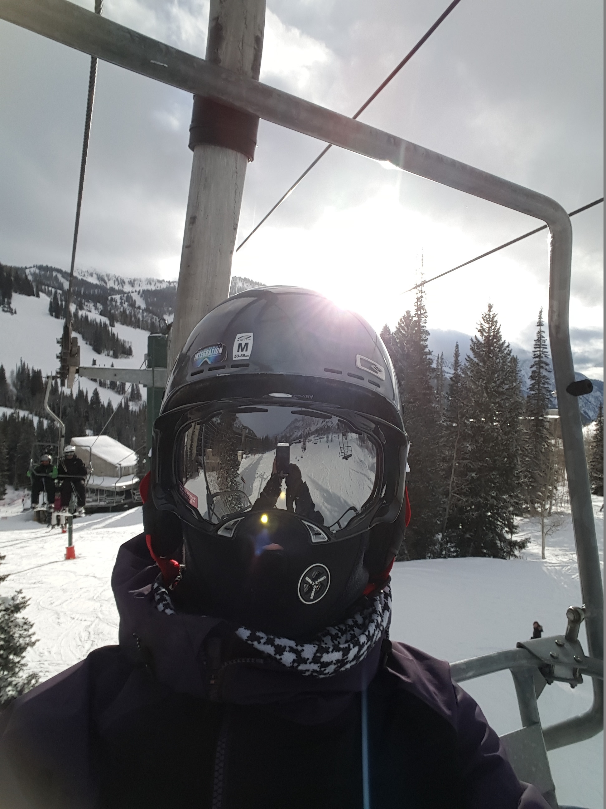

About Me

Hello! Welcome to my first portfolio page! My name is Ara, and I am from Buffalo New York (The home of the buffalo chicken wing!! Click here to see my favorite place to go in my home town). Well, I lived in South Korea for 10 years, so there is some Korean left in me too.
I went to university called SUNY Geneseo, which is located in a small town in the middle of nowhere, where occasionally smelled like manure. Most students eventually got used to the smell after their 2nd year of college, but I never got used to it. I studied Biochemistry and mathematics for 5 years, but man, I did not enjoy studying biochemistry! I had a lot more fun studying mathematics for sure. When I wasn’t studying I played guitar with one of my professors and performed occasionally in front of people, like at the farmer’s market. It made me feel involved and I loved it.
After graduation, I was not sure what I wanted to do exactly, so I moved in with my sister in Chicago, Illinois. Well, that was a big change for me! Moving from a farm college to a big city. Then I decided to get a certification to become a EMT-basic and hopefully work at the Chicago fire department. But oh well, I did not know anything about testing system, and I missed to take the test (which means that you have to wait another 1000 years to become CFD). So I had to set aside my dream of becoming CFD, and I am a currently working at ATI Ambulance Company as an EMT-B.
Now I am hoping to become a full-stack developer after completing North Western coding boot camp!